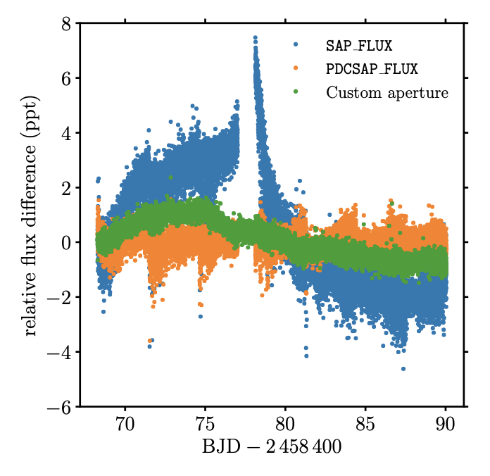
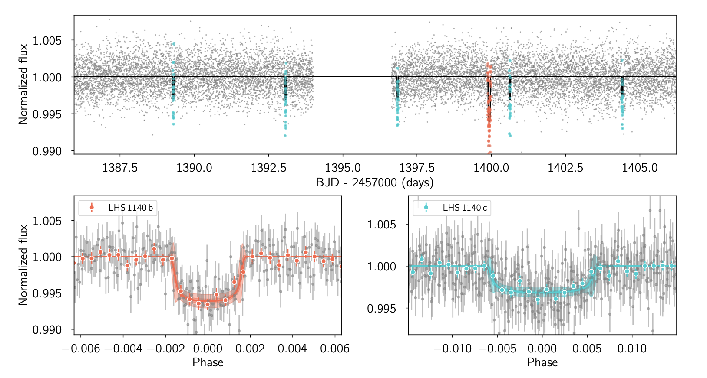

Hello TESS followers and welcome to this weeks news bulletin! This week we have three papers from the archive.
Robust asteroseismic properties of the bright planet host HD 38529 (Ball et. al., 2020):
The wide-field, high cadenced observations provided by TESS makes it perfect to detect and study the oscillations of interesting stars, particularly planet hosts.
The authors have detected solar-like oscillations in the bright G5 sub-giant HD 38529. This star hosts an inner Jupiter mass planet which has an orbit of 14.3 days, and an outer orbit low-mass brown dwarf which has a period of 2136 days.
Using the results from multiple stellar modeling teams the authors produce asteroseismic estimates of the stars properties, including its mass which they derive as M=1.48⊙, radius R=2.68 R⊙ and age t=3.07 Gyr.
Planetary system LHS 1140 revisited with ESPRESSO and TESS (Lillo-Box et. al., 2020):
The M-dwarf LHS 1140 hosts two known transiting planets with orbital periods of 3.77 and 24.7 days respectively. These planets were detected with HARPS and Spitzer. The external planet is known as LHS 1140 b and is a rocky super-Earth that is located in the habitable zone.
In this paper the authors use high-precision radial velocity measurements from ESPRESSO, in addition to data from HARPS and TESS to provide additional information about the system.
New masses were determined for both planets. LHS 1140 b is estimated to have a mass of 6.48 M⊕ and LHS 1140 c is estimated as 1.78 M⊕. Both planets are thought to have Earth-like bulk compositions, but internal structure analysis suggests that LHS 1140 b might be iron-enriched. When studying the water content of the planets a maximum mass fraction of 10-12% was derived, equivalent to a deep ocean layer of 779 km for LHS 1140 b. Evidence for a new planet candidate in the system of mass 4.8 M⊕, with an orbital period pf 78.9 days has been detected by the authors.
Which Stars can see Earth as a Transiting Exoplanet? (Kaltenegger et. al., 2020):
Planets are often found via the transit and eclipse of their host stars. Spectroscopic observations of these events are commonly used to characterized the planets atmosphere. To detect and obtain useful information however, the exoplanets orbit must be aligned with our line of sight. This paper asks the question what stars closest to us would be able to search for life on Earth in the same way that we search for life. Using data from the TESS Input Catalogue and Gaia DR2 the authors identify 1,004 Main Sequence stars within 100 parsecs, of which 508 guarantee a minimum 10-hour long observation of Earth's transit. The list consists of about 77% M-type, 12% K-type, 6% G-type, 4% F-type stars, and 1% A-type stars close to the ecliptic.

Fig 1. Taken from Ball et. al., (2020). The TESS SAP and PDCSAP flux of HD 38529. The authors custom aperture lightcurve is shown in green.

Fig 2. Taken from Lillo-Box et. al., (2020). The TESS PDCSAP lightcurve as produced from the SPOC pipeline. The top panel shows the complete lightcurve displaying the transits of the two known planets. The red points indicate LHS 1140 b, and the blue LHS 1140 c. The bottom panels are the phase-folded lightcurves centered on the planet phase for each of the transiting planets. The colored symbols correspond to bins of one fifth of the transit duration..